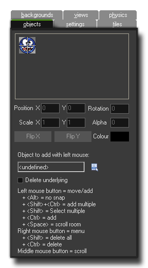
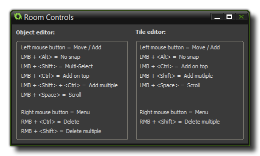

The objects tab is where you can select an object and then place an
instance of that object into the selected room.
First you must decide which object from your resource tree you wish
to add, and this can be done by clicking on the Object to add
with left mouse menu button, or by clicking the large area
above where the object sprite is normally shown. If the object has
no sprite, this box will be blank, but if it does, the sprite will
be shown on a chequered background along with its x/y origin which
indicates how the instance will be aligned with the grid once
placed in the room editor.
Once you have selected the correct object, you can now place instances of it within the room by clicking anywhere, with the instance being snapped to the grid (if you have the snap values other than 0). There are a number of additional options which will be made available to the right of the object image that you can then change for the instance that you have just placed within the room. These are:
- PositionX - With this you can set the position in the room along the x-axis (note that negative values are accepted and you can set values to outside the defined room boundary).
- PositionY - With this you can set the position in the room along the y-axis (note that negative values are accepted and you can set values to outside the defined room boundary).
- ScaleX - With this you can set the scale along the x-axis of the instance. 1 is the default value, and you can use negative values too to "mirror" the instance.
- ScaleY - With this you can set the scale along the y-axis of the instance. 1 is the default value, and you can use negative values too to "flip" the instance.
- Rotation - Rotates the instance around its x/y origin by the given number of degrees. You can use any real number for this value.
- Alpha - With this you can set the alpha value for the instance from 0 to 255, where the default value of 255 is completely opaque, and 0 is completely transparent.
- colour - This option sets the colour to be blended with the current instance sprite. White is the default colour (which means that the instance will be drawn "as is" with no blending).
- Flip X - Flagging this will mirror the instance sprite along the horizontal (the same can be achieved by setting the ScaleX value to -1).
- Flip Y - Flagging this will mirror the instance sprite along the vertical (the same can be achieved by setting the ScaleY value to -1).
You should note that a selected instance can also be scaled by clicking on one of the corner "nodes" that mark the bounding box of the instance when you select it in the room editor. By clicking the node and dragging the mouse, you can change the image scale, and these changes will be reflected in the values of the above mentioned areas. You can also use the cursor keys to move an instance of an object placed in the room and so "fine-tune" the position easier. By default this is a shift of 1 pixel at a time, however you can modify this behaviour using the following keys:
- <Shift> + cursor keys - Move the instance 10 pixels in the direction of the cursor key.
- <Control> + cursor keys - Move the instance 5 pixels in the direction of the cursor key.
- <Shift> + <Control> + cursor keys - Snap the instance to the next nearest grid position in the direction of the cursor key.
The normal behaviour for placing instances within the room is
that if you place an instance on top of another one, the original
instance is overlapped by the new one. Generally this is what you
want to happen, but not always, and so there is a check-box at the
bottom of the objects tab which you can flag to make any new
instances delete those that were place before in the same position.
The "hitbox" used to calculate whether an instance is over another
one or not is the bounding box taken from the collision mask
defined for the sprite that the instance uses. if the instance has
no sprite, then only those that have been previously placed at the
same position will de removed.
There are also a number of keyboard shortcuts that can be used to make your life easier when placing instances (you can open the following window that shows them all from the toolbar at the top of the room editor): 
- Clicking with the left mouse button in the room will place an instance of the currently selected object, and clicking an instance will permit you to move it around the room.
- Holding the <Alt> key while placing the instance will make ignore the grid snapping and be placed exactly where you release the mouse button.
- Holding the <Shift> key while clicking the left mouse button on an instance will add it to the selected group. In this way you can select multiple instances which can then be moved together by clicking and dragging the bounding box, or they can be copied and pasted, even into other rooms.
- Holding the <Control> key while clicking the left mouse button will add a new instance on top of previously placed ones.
- Holding the <Shift> key and the <Control> while clicking the left mouse button will add multiple instances like a "brush" when you drag the mouse around.
- Holding the <Space>key while clicking and dragging with the left mouse button (or simply clicking and holding the middle mouse button) permits you to scroll around the room.
- Right click on an individual instance will bring up a special menu with further options (more information on this can be found here - Advanced Use: More About Rooms).
- To remove an instance from the room, hold the <Control> key and then right click the instance.
- To remove all instances at the mouse position, hold <Shift> key and then right click the position.
- Holding the <Control> key and pressing the "C" keyboard key will copy the selected instance or instances.
- Holding the <Control> key and pressing the "V" keyboard key will paste the selected instance or instances, even in a different room from that in which they were copied.
- Using the mouse wheel permits you to zoom in and out of the room editor.